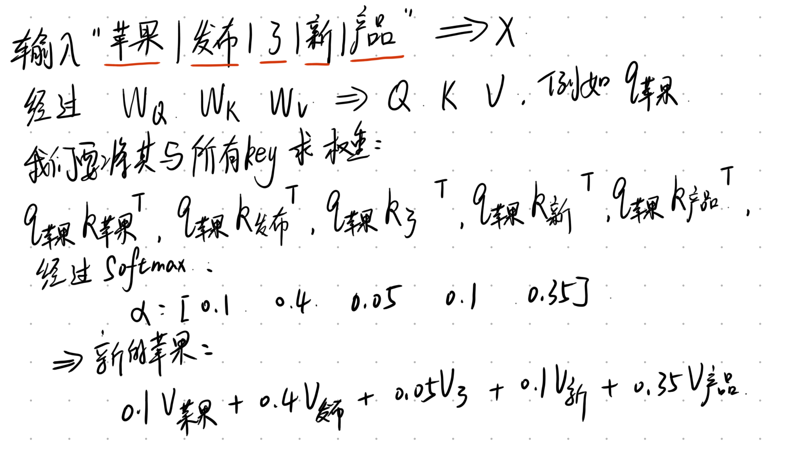
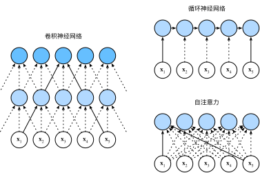
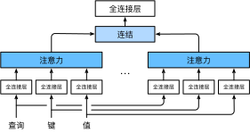
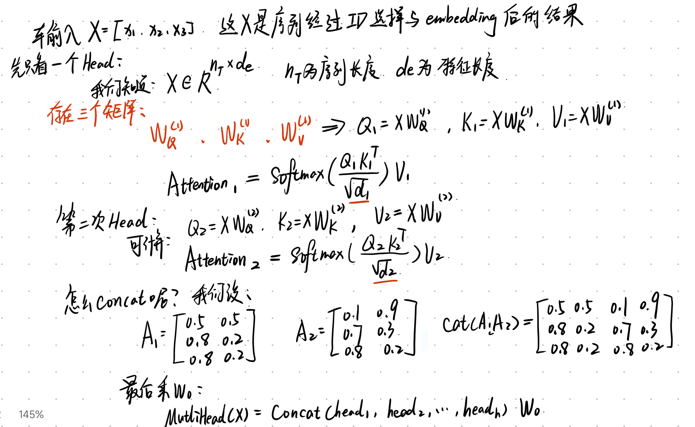
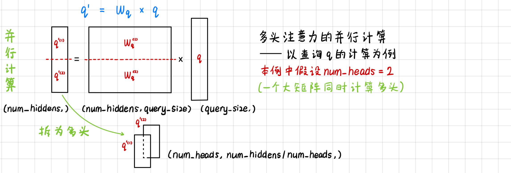
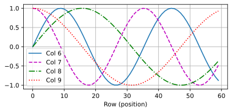

代码
for i in range(8):
print(f'{i} 的二进制是：{i:>03b}')0 的二进制是：000
1 的二进制是：001
2 的二进制是：010
3 的二进制是：011
4 的二进制是：100
5 的二进制是：101
6 的二进制是：110
7 的二进制是：1112026年8月20日
前面我们已经介绍了注意力机制的基本思想。
对于一个 Query 和若干组 Key-Value Pair，注意力机制首先通过注意力评分函数计算 Query 与不同 Key 之间的匹配程度： a(q,k_i) 然后经过 softmax 得到注意力权重： \alpha(q,k_i)=\operatorname{softmax}(a(q,k_i)) 最后根据注意力权重对 Value 进行加权求和： \sum_i \alpha(q,k_i)v_i
对于多个 Query，使用缩放点积注意力时，可以统一写成： \operatorname{softmax} \left( \frac{QK^T}{\sqrt{d_k}} \right)V 在上一部分的 Seq2Seq + Attention 中，我们又看到了 Attention 在实际模型中的一种经典使用方式。
对于 Decoder 的第 t'个时间步： Q=s_{t'-1}
来自 Decoder 上一个时间步的隐藏状态，而： K=V=H 来自 Encoder 所有时间步的隐藏状态。
因此，Decoder 可以根据当前已经生成的信息，动态地从 Encoder 的所有输出中选择更加重要的信息。
这里有一个非常明显的特点： Query 与 Key、Value 来自两个不同的地方。 Query 来自 Decoder，而 Key 和 Value 来自 Encoder。
这种注意力方式现在通常被称为： \boxed{\text{Cross-Attention}} 即交叉注意力。 那么接下来就会产生一个很自然的问题：
Attention 一定要在两个不同的序列之间进行吗？ 答案是否定的。 这就引出了 Self-Attention。
想象一下，有了注意力机制之后，我们将词元序列输入注意力池化中， 以便同一组词元同时充当查询、键和值。 具体来说，每个查询都会关注所有的键－值对并生成一个注意力输出。 由于查询、键和值来自同一组输入，因此被称为 自注意力（self-attention） ， 也被称为内部注意力（intra-attention）。
在 Seq2Seq + Attention 中： Q\leftarrow Decoder K,V\leftarrow Encoder
Decoder 使用自己的状态作为 Query，去 Encoder 的输出中寻找相关信息。
例如进行机器翻译时，Decoder 准备生成某个法语词，它就会根据当前状态，在整个英语输入序列中寻找最值得关注的位置。 这是两个序列之间的信息交互。
但是我们还可以考虑另外一个问题。 假设输入一句话： 苹果发布了新的产品
Embedding 层首先会把每个词转换成向量：
x_1,x_2,x_3,x_4,x_5
例如：
x_1=\text{“苹果”的Embedding}
Embedding 可以告诉模型“苹果”这个词本身是什么，却无法根据当前句子的上下文判断这里的“苹果”究竟代表水果还是 Apple 公司。
在前面学习 RNN 时，我们解决这个问题的方法是让信息按照时间顺序传播： x_1 \rightarrow h_1 \rightarrow h_2 \rightarrow h_3 \rightarrow \cdots
通过隐藏状态不断传递上下文信息。但是既然现在已经有了 Attention，我们可以换一种思路：
能不能让“苹果”直接去关注当前句子中的其他词？例如让“苹果”分别关注：
苹果； 发布； 了； 新的； 产品。
如果模型发现： \text{苹果}\leftrightarrow\text{发布}
以及： \text{苹果}\leftrightarrow\text{产品}
具有很高的相关性，那么“苹果”最终得到的新表示中，就会大量融合“发布”和“产品”的信息。
于是模型就有可能知道： 这里的“苹果”指的是一家公司，而不是一种水果。
这就是 Self-Attention（自注意力） 最核心的思想：让序列中的每一个位置，都能够直接关注同一个序列中的其他位置。
Self-Attention 并没有改变 Attention 本身的计算方式。
之前的缩放点积注意力仍然是： \operatorname{softmax} \left( \frac{QK^T}{\sqrt{d_k}} \right)V
真正改变的是： $ Q,K,V $ 从哪里来。 Cross-Attention 中：Q来自序列一，K,V来自序列二。而 Self-Attention 中：Q、K、V来自同一个序列
这也是 Self-Attention 中“Self”的含义。它并不是一种新的注意力评分函数，而是 Attention 的一种使用方式。
这里非常容易产生一个误解。有时候为了简化描述，我们会写：Q=K=V=X
但严格来说，这里的意思是：Q、K、V 的原始信息都来自同一个输入或序列X。
真正进行 Attention 计算之前，通常会分别经过三个不同的线性变换：Q=XW_Q\quad,K=XW_K\quad, V=XW_V
其中：W_Q,\quad W_K,\quad W_V 都是需要通过训练学习的参数。
因此，一般情况下：Q\neq K\neq V,只是它们拥有相同的来源。
为什么一个输入 (X) 要分别生成 Q、K、V？
可以继续使用我们之前对 QKV 的理解。
对于一个词来说，当它作为 Query 时，它表达的是：“我现在希望寻找什么信息？”
当它作为 Key 时，它表达的是：“我有什么特征，可以让其他 Query 判断是否应该关注我？”
当它作为 Value 时，它表达的是：“如果别人关注了我，我真正应该向对方提供什么信息？”
也就是说，同一个词在 Attention 中同时承担三种不同的角色。因此模型使用： W_Q,W_K,W_V
把同一个输入投影到三个不同的表示空间，当然这只是线性变换。

可以看到：
Self-Attention 并不是直接对原始词向量进行加权求和。每个输入首先通过W_V,映射为Value表示，注意力权重由Query 与 Key 的匹配程度决定，最终输出是这些 Value 表示的加权组合。
Self-Attention 的输出不是简单地复制原来的词向量，而是根据上下文重新计算当前词的表示。因此，“苹果”最初的 Embedding 可能只是一个相对固定的词向量，但经过 Self-Attention 后，它已经包含了当前句子中的上下文信息。
这就是一种上下文化表示。
同一个“苹果”出现在：苹果很好吃。与：苹果发布了新的产品。两个句子中时，由于周围可以关注到的信息不同，经过 Self-Attention 后得到的表示也可以不同。
总结如下：
给定一个由词元组成的输入序列\mathbf{x}_1, \ldots, \mathbf{x}_n， 其中任意\mathbf{x}_i \in \mathbb{R}^d（1 \leq i \leq n）。 该序列的自注意力输出为一个长度相同的序列\mathbf{y}_1, \ldots, \mathbf{y}_n，其中：
\mathbf{y}_i = f(\mathbf{x}_i, (\mathbf{x}_1, \mathbf{x}_1), \ldots, (\mathbf{x}_n, \mathbf{x}_n)) \in \mathbb{R}^d
根据中定义的注意力汇聚函数f，张量的形状为（批量大小，时间步的数目或词元序列的长度，d）。 输出与输入的张量形状相同。。
接下来比较下面几个架构，目标都是将由n个词元组成的序列映射到另一个长度相等的序列，其中的每个输入词元或输出词元都由d维向量表示。具体来说，将比较的是卷积神经网络、循环神经网络和自注意力这几个架构的计算复杂性、顺序操作和最大路径长度。
请注意，顺序操作会妨碍并行计算，而任意的序列位置组合之间的路径越短，则能更轻松地学习序列中的远距离依赖关系

我们先看看这三个图怎么理解？
CNN的核心思想就是先看附近，第一层CNN 不一定一次看完整句话，而可能只看：x_2, x_3, x_4，而CNN要看到更远的词，我们只能考叠层或者控制感受野，但是一般来说都是考叠层处理。
CNN就是每一层主要关注局部，层层叠加之后，才逐渐获得远距离信息。
RNN 的核心思想不是“看附近几个词”，而是：按顺序一个词一个词地读，并把之前的信息带到后面。他会根据记忆状态来保存前面的信息，但是对于远距离的信息传递，路径太长了，会漏下很多信息，且并行也难以实现。
这是这张图里最重要的一幅，因为 Transformer 的核心就是它。你会发现一个非常明显的区别:每一个x_i,几乎都能直接连接到每一个蓝色节点。所以图里箭头密密麻麻。它允许你直接查看所有的词，只是每个词的连接强度不同，可以看我们前面的例子来理解。
考虑一个卷积核大小为 k 的卷积层。 在后面的章节将提供关于使用卷积神经网络处理序列的更多详细信息。 目前只需要知道的是，由于序列长度是 n，输入和输出的通道数量都是 d， 所以卷积层的计算复杂度为 \mathcal{O}(knd^2)。 如上图所示， 卷积神经网络是分层的，因此为有 \mathcal{O}(1) 个顺序操作， 最大路径长度为 \mathcal{O}(n/k)。 例如，\mathbf{x}_1和\mathbf{x}_5 处于图中卷积核大小为3的双层卷积神经网络的感受野内。
当更新循环神经网络的隐状态时， d \times d 权重矩阵和 d 维隐状态的乘法计算复杂度为 \mathcal{O}(d^2)。 由于序列长度为 n，因此循环神经网络层的计算复杂度为 \mathcal{O}(nd^2)。 有 \mathcal{O}(n) 个顺序操作无法并行化，最大路径长度也是 \mathcal{O}(n)。
在自注意力中，查询、键和值都是 n \times d 矩阵。 考虑缩放的”点－积“注意力， 其中 n \times d 矩阵乘以 d \times n 矩阵。 之后输出的 n \times n 矩阵乘以 n \times d 矩阵。 因此，自注意力具有 \mathcal{O}(n^2d) 计算复杂性。 正如在图中所讲， 每个词元都通过自注意力直接连接到任何其他词元。 因此，有 \mathcal{O}(1) 个顺序操作可以并行计算， 最大路径长度也是 \mathcal{O}(1)。
总而言之，卷积神经网络和自注意力都拥有并行计算的优势， 而且自注意力的最大路径长度最短。 但是因为其计算复杂度是关于序列长度的二次方，所以在很长的序列中计算会非常慢。
CNN：卷积操作的计算复杂度是 \mathcal{O}(knd^2)，其中 k 是卷积核的大小，n 是序列长度，d 是嵌入维度。卷积操作在每个位置上都需要与卷积核进行计算，因此复杂度与序列长度和嵌入维度的乘积成正比。
RNN：循环神经网络的计算复杂度是 \mathcal{O}(nd^2)，其中 n 是序列长度，d 是隐藏状态的维度。在每个时间步，RNN需要更新隐藏状态，并且每个更新都涉及到一个矩阵乘法操作，因此复杂度与序列长度和隐藏状态维度的乘积成正比。
自注意力：自注意力的计算复杂度是 \mathcal{O}(n^2d)，其中 n 是序列长度，d 是嵌入维度。自注意力需要计算每个位置与其他位置之间的注意力权重，因此复杂度与序列长度的平方和嵌入维度的乘积成正比。
CNN：卷积操作在处理序列时具有并行性，因为在每个位置上都可以同时进行计算，所以并行度为 \mathcal{O}(n)。
RNN：循环神经网络的计算是按时间步顺序进行的，每个时间步的计算依赖于前一个时间步的结果，因此并行度为 \mathcal{O}(1)。
自注意力：自注意力的计算可以并行进行，因为每个位置的注意力权重只与其他位置的信息相关，所以并行度为 \mathcal{O}(1)。
CNN：卷积操作的最长路径是 \mathcal{O}(n/k)，其中 n 为序列长度，k 是卷积核的大小。卷积操作通过滑动窗口在序列上进行计算，每次滑动一个步长，所以最长路径取决于卷积核的大小。（最早的像素和最晚的像素什么时候才能产生关联）
RNN：循环神经网络的最长路径是 \mathcal{O}(n)，因为每个时间步需要按顺序处理，所以路径长度等于序列的长度。
自注意力：自注意力的最长路径是 \mathcal{O}(1)，因为每个位置的注意力权重只与其他位置的信息相关，不受序列长度影响。
Self-Attention 解决了一个问题：
如何让一个序列内部的不同位置直接交换信息？但是这里又会出现新的问题。
假设有一句话：小明因为下雨没有出去，他留在了家里。当我们计算“他”的表示时，“他”可能需要关注“小明”，因为： \text{他}\leftrightarrow\text{小明} 存在指代关系。与此同时，“他”也可能需要关注：“留在”,因为存在主谓关系。还可能需要关注：“家里”,因为需要理解动作发生的位置。甚至还可能关注：“下雨”,因为这个信息和整个事件之间存在一定联系。
也就是说：词与词之间并不只有一种关系。但如果只有一个 Attention，那么我们最终只能计算出一组：Q,K,V以及一个 Attention Weight 矩阵。
一个注意力空间需要同时描述很多不同类型的关系。于是就有了一个很直接的想法：能不能同时做多次 Attention？
每一次 Attention 使用不同的参数，在不同的表示空间中寻找不同的关系。这就是： \boxed{\text{Multi-Head Attention}} 即多头注意力。
可以把一个 Head 简单理解为：一套独立的 Attention。
普通缩放点积注意力为：\operatorname{softmax}\left(\frac{QK^T}{\sqrt{d_k}}\right)V
如果只做一次，就是一个 Head。
如果同时做：[head_1, head_2, ···, head_h]
那么就得到h个 Attention Head。但这里不是简单地把完全相同的 Attention 重复h次。每个 Head 都拥有自己不同的参数。对于第i个 Head： Q_i=QW_i^Q,K_i=KW_i^K,V_i=VW_i^V 于是： \operatorname{Attention}(QW_i^Q,KW_i^K,VW_i^V)
展开以后： \operatorname{softmax}\left(\frac{(QW_i^Q)(KW_i^K)^T}{\sqrt{d_k}}\right)VW_i^V
因为两个head并不相同，所以两个 Head 即使面对相同的输入，也会得到不同的 Q、K、V。因此它们可以学习到不同的注意力模式。
总的来说，多头注意力允许模型在不同的表示子空间中并行建立不同的注意力模式。
假设总共有h个 Attention Head： head_1,\ head_2,\ \cdots,\ head_h 每一个 Head 都进行一次独立的 Attention： \operatorname{Attention}(QW_i^Q,KW_i^K,VW_i^V) 计算完成以后，把所有 Head 的结果拼接： \operatorname{Concat}(head_1,head_2,\cdots,head_h) 然后再进行一次线性变换：W^O,最终： \operatorname{Concat}(head_1,\ldots,head_h)W^O
这就是 Multi-Head Attention 的核心公式。下图展示了使用全连接层来实现可学习的线性变换的多头注意力：

让我们用数学语言将这个模型形式化地描述出来。 给定查询 \mathbf{q} \in \mathbb{R}^{d_q}、 键 \mathbf{k} \in \mathbb{R}^{d_k} 和 值 \mathbf{v} \in \mathbb{R}^{d_v}， 每个注意力头 \mathbf{h}_i（i = 1, \ldots, h）的计算方法为：
\mathbf{h}_i = f(\mathbf W_i^{(q)}\mathbf q, \mathbf W_i^{(k)}\mathbf k,\mathbf W_i^{(v)}\mathbf v) \in \mathbb R^{p_v}
其中，可学习的参数包括 \mathbf W_i^{(q)}\in\mathbb R^{p_q\times d_q}、 \mathbf W_i^{(k)}\in\mathbb R^{p_k\times d_k} 和 \mathbf W_i^{(v)}\in\mathbb R^{p_v\times d_v}， 以及代表注意力汇聚的函数 f。 f 可以是加性注意力和缩放点积注意力。 多头注意力的输出需要经过另一个线性转换， 它对应着 h 个头连结后的结果，因此其可学习参数是 \mathbf W_o\in\mathbb R^{p_o\times h p_v}：
\mathbf W_o \begin{bmatrix}\mathbf h_1\\\vdots\\\mathbf h_h\end{bmatrix} \in \mathbb{R}^{p_o}
基于这种设计，每个头都可能会关注输入的不同部分， 可以表示比简单加权平均值更复杂的函数。

在实现过程中通常选择缩放点积注意力作为每一个注意力头。 为了避免计算代价和参数代价的大幅增长， 我们设定 p_q = p_k = p_v = p_o / h。
值得注意的是，如果将查询、键和值的线性变换的输出数量设置为 p_q h = p_k h = p_v h = p_o， 则可以并行计算 h 个头。

我们最常见的是分为8部分，假设d_{model}=512，并使用 8 个 Attention Head。每个 Head 并不是简单取得输入向量中的 64 个维度，而是通过各自的线性投影，从完整的 512 维输入中得到一个 64 维的 Q、K、V 表示。这样 8 个 Head 可以在不同的低维表示子空间中独立计算 Attention，最后将 8 个 64 维输出拼接为 512 维，再经过输出投影 W_O融合不同 Head 的信息。
到现在为止，Self-Attention 看起来似乎非常完美：
它可以让任意两个位置直接建立联系；它可以并行计算；再结合 Multi-Head Attention，还能够让模型从多个表示子空间学习不同的关系。那么是不是可以直接扔掉 RNN，只使用 Self-Attention 来处理序列？
还不行。因为这里存在一个非常重要的问题：Self-Attention 本身并不知道词的顺序。这是理解 Transformer 为什么需要位置编码的关键。
在处理词元序列时，循环神经网络是逐个的重复地处理词元的， 而自注意力则因为并行计算而放弃了顺序操作。 为了使用序列的顺序信息，通过在输入表示中添加 位置编码（positional encoding）来注入绝对的或相对的位置信息。 位置编码可以通过学习得到也可以直接固定得到。 接下来描述的是基于正弦函数和余弦函数的固定位置编码。
假设输入表示 \mathbf{X} \in \mathbb{R}^{n \times d} 包含一个序列中 n 个词元的 d 维嵌入表示。 位置编码使用相同形状的位置嵌入矩阵 \mathbf{P} \in \mathbb{R}^{n \times d} 输出 \mathbf{X} + \mathbf{P}， 矩阵第 i 行、第 2j 列和 2j+1 列上的元素为：
\begin{aligned} p_{i, 2j} &= \sin\left(\frac{i}{10000^{2j/d}}\right)\\ p_{i, 2j+1} &= \cos\left(\frac{i}{10000^{2j/d}}\right)\end{aligned}
即偶数列是 sin 函数，奇数列是 cos 函数，但是周期不同。
一开始看到这个公式可能会觉得比较奇怪。
其实可以把它理解成：使用很多不同频率的正弦波和余弦波来描述一个位置。对于比较靠前的维度，波变化得比较快。对于比较靠后的维度，波变化得比较慢。
所以同一个位置 (pos)，会在不同维度上得到不同的 sin 和 cos 值。
最终，每一个位置都对应一个具有明显模式的位置向量：p_1,p_2,p_3,\ldots
例如从直观上理解：
\sin(\cdots), \cos(\cdots), \sin(\cdots), \cos(\cdots), \ldots
\sin(\cdots), \cos(\cdots), \sin(\cdots), \cos(\cdots), \ldots
不同位置得到的编码不同。这样模型就可以区分：pos=1和pos=2以及更远的位置。
如果所有维度都使用相同频率：\sin(pos)
那么不同维度提供的信息其实是重复的。所以位置编码让不同维度拥有不同的周期。可以粗略理解为：
有的维度负责观察非常局部的位置变化：1,2,3,4,\ldots
有的维度变化比较缓慢，可以帮助描述更大尺度上的位置差异。因此一个位置最终不是通过一个数字：pos=37表示，而是被编码成一个高维向量：p_{37}
在位置嵌入矩阵 \mathbf{P} 中， 行代表词元在序列中的位置，列代表位置编码的不同维度。 从下面的例子中可以看到位置嵌入矩阵的第 6 列和第 7 列的频率高于第 8 列和第 9 列。 第 6 列和第 7 列之间的偏移量（第 8 列和第 9 列相同）是由于正弦函数和余弦函数的交替。

为了明白沿着编码维度单调降低的频率与绝对位置信息的关系， 让我们打印出0, 1, \ldots, 7的二进制表示形式。 正如所看到的，每个数字、每两个数字和每四个数字上的比特值 在第一个最低位、第二个最低位和第三个最低位上分别交替。
0 的二进制是：000
1 的二进制是：001
2 的二进制是：010
3 的二进制是：011
4 的二进制是：100
5 的二进制是：101
6 的二进制是：110
7 的二进制是：111在二进制表示中，较高比特位的交替频率低于较低比特位， 与下面的热图所示相似，只是位置编码通过使用三角函数在编码维度上降低频率。
（即位置比较小的特征，如 10 到 15 左右的特征，变化速度较快，而 20 之后的位置编码变化的就很慢了）
由于输出是浮点数，因此此类连续表示比二进制表示法更节省空间。
除了捕获绝对位置信息之外，上述的位置编码还允许模型学习得到输入序列中相对位置信息。 这是因为对于任何确定的位置偏移 \delta，位置 i + \delta 处的位置编码可以线性投影位置i处的位置编码来表示。
这种投影的数学解释是，令 \omega_j = 1/10000^{2j/d}， 对于任何确定的位置偏移 \delta， eq_positional-encoding-def中的任何一对 (p_{i, 2j}, p_{i, 2j+1}) 都可以线性投影到 (p_{i+\delta, 2j}, p_{i+\delta, 2j+1})：
\begin{aligned} &\begin{bmatrix} \cos(\delta \omega_j) & \sin(\delta \omega_j) \\ -\sin(\delta \omega_j) & \cos(\delta \omega_j) \\ \end{bmatrix} \begin{bmatrix} p_{i, 2j} \\ p_{i, 2j+1} \\ \end{bmatrix}\\ =&\begin{bmatrix} \cos(\delta \omega_j) \sin(i \omega_j) + \sin(\delta \omega_j) \cos(i \omega_j) \\ -\sin(\delta \omega_j) \sin(i \omega_j) + \cos(\delta \omega_j) \cos(i \omega_j) \\ \end{bmatrix}\\ =&\begin{bmatrix} \sin\left((i+\delta) \omega_j\right) \\ \cos\left((i+\delta) \omega_j\right) \\ \end{bmatrix}\\ =& \begin{bmatrix} p_{i+\delta, 2j} \\ p_{i+\delta, 2j+1} \\ \end{bmatrix} \end{aligned}
2\times 2 投影矩阵（旋转矩阵）不依赖于任何位置的索引 i。
该性质证明了：两个词语之间的关系只是和相对位置有关，而和绝对位置无关。
#@save
def transpose_qkv(X, num_heads):
"""为了多注意力头的并行计算而变换形状"""
# 输入 X 的形状: (batch_size，查询或者“键－值”对的个数，num_hiddens)
# 输出 X 的形状: (batch_size，查询或者“键－值”对的个数，num_heads，num_hiddens / num_heads)
X = X.reshape(X.shape[0], X.shape[1], num_heads, -1)
# 输出 X 的形状: (batch_size，num_heads，查询或者“键－值”对的个数，num_hiddens / num_heads)
X = X.permute(0, 2, 1, 3)
# 最终输出的形状: (batch_size * num_heads，查询或者“键－值”对的个数，num_hiddens / num_heads)
return X.reshape(-1, X.shape[2], X.shape[3])
#@save
def transpose_output(X, num_heads):
"""逆转transpose_qkv函数的操作"""
X = X.reshape(-1, num_heads, X.shape[1], X.shape[2])
X = X.permute(0, 2, 1, 3)
# 重新将多头的计算结果拼接回 num_hiddens 这个维度
# 输出 X 的形状: (batch_size，查询或者“键－值”对的个数，num_hiddens)
return X.reshape(X.shape[0], X.shape[1], -1)#@save
class MultiHeadAttention(nn.Module):
"""多头注意力"""
def __init__(self, key_size, query_size, value_size, num_hiddens, num_heads, dropout, bias=False, **kwargs):
super(MultiHeadAttention, self).__init__(**kwargs)
self.num_heads = num_heads
self.attention = d2l.DotProductAttention(dropout)
self.W_q = nn.Linear(query_size, num_hiddens, bias=bias)
self.W_k = nn.Linear(key_size, num_hiddens, bias=bias)
self.W_v = nn.Linear(value_size, num_hiddens, bias=bias)
self.W_o = nn.Linear(num_hiddens, num_hiddens, bias=bias)
def forward(self, queries, keys, values, valid_lens):
# 输出 queries，keys，values 的形状: (batch_size，查询或者“键－值”对的个数，num_hiddens)
# valid_lens 的形状: (batch_size，) 或 (batch_size，查询的个数)
# 经过变换后，输出的 queries，keys，values 的形状: (batch_size * num_heads，查询或者“键－值”对的个数，num_hiddens / num_heads)
queries = transpose_qkv(self.W_q(queries), self.num_heads)
keys = transpose_qkv(self.W_k(keys), self.num_heads)
values = transpose_qkv(self.W_v(values), self.num_heads)
if valid_lens is not None:
# 在轴0，将第一项（标量或者矢量）复制 num_heads 次，然后如此复制第二项，诸如此类
valid_lens = torch.repeat_interleave(valid_lens, repeats=self.num_heads, dim=0)
# output 的形状: (batch_size * num_heads，查询的个数，num_hiddens / num_heads)
output = self.attention(queries, keys, values, valid_lens) # 返回的 output 是加权后的 value
# 将不同头的输出拼接在一起
# output_concat 的形状: (batch_size，查询的个数，num_hiddens)
output_concat = transpose_output(output, self.num_heads)
return self.W_o(output_concat) # 对拼接后的多头注意力进行线性变换MultiHeadAttention(
(attention): DotProductAttention(
(dropout): Dropout(p=0.5, inplace=False)
)
(W_q): Linear(in_features=100, out_features=100, bias=False)
(W_k): Linear(in_features=100, out_features=100, bias=False)
(W_v): Linear(in_features=100, out_features=100, bias=False)
(W_o): Linear(in_features=100, out_features=100, bias=False)
)MultiHeadAttention(
(attention): DotProductAttention(
(dropout): Dropout(p=0.5, inplace=False)
)
(W_q): Linear(in_features=100, out_features=100, bias=False)
(W_k): Linear(in_features=100, out_features=100, bias=False)
(W_v): Linear(in_features=100, out_features=100, bias=False)
(W_o): Linear(in_features=100, out_features=100, bias=False)
)#@save
class PositionalEncoding(nn.Module):
"""位置编码"""
def __init__(self, num_hiddens, dropout, max_len=1000):
super(PositionalEncoding, self).__init__()
self.dropout = nn.Dropout(dropout)
# 创建一个足够长的P
self.P = torch.zeros((1, max_len, num_hiddens))
X = torch.arange(max_len, dtype=torch.float32).reshape(-1, 1) / torch.pow(10000, torch.arange(
0, num_hiddens, 2, dtype=torch.float32) / num_hiddens)
self.P[:, :, 0::2] = torch.sin(X)
self.P[:, :, 1::2] = torch.cos(X)
def forward(self, X):
X = X + self.P[:, :X.shape[1], :].to(X.device)
return self.dropout(X)encoding_dim, num_steps = 32, 60
pos_encoding = PositionalEncoding(encoding_dim, 0)
pos_encoding.eval()
X = pos_encoding(torch.zeros((1, num_steps, encoding_dim)))
P = pos_encoding.P[:, :X.shape[1], :]
d2l.plot(torch.arange(num_steps), P[0, :, 6:10].T, xlabel='Row (position)',
figsize=(6, 2.5), legend=["Col %d" % d for d in torch.arange(6, 10)])